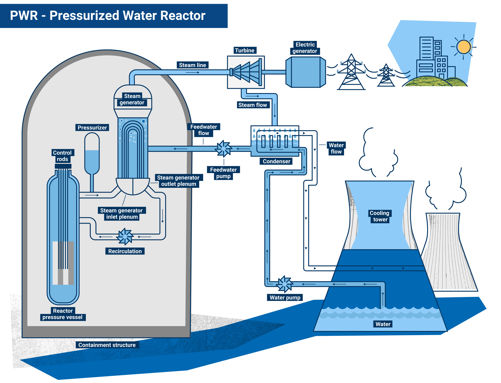

What is Nuclear Energy?
Nuclear energy is the energy in the nucleus, or core, of an atom. Atoms are tiny particles that make up all the matter in the universe. Nuclear energy can be produced in two ways: nuclear fusion and nuclear fission. In nuclear fission, atoms are split apart to release energy. This is the method used in nuclear power plants to produce electricity. Learn more about nuclear fission.
Benefits of Nuclear Energy
- Low greenhouse gas emissions
- High power output
- Reliable energy source
- Small land footprint compared to other energy sources
- Fuel efficiency
The Future of Nuclear Power
Innovation in nuclear technology, such as small modular reactors (SMRs) and advanced reactor designs, promises even greater safety and efficiency. Explore the World Nuclear Association for more information.
The History of Nuclear Energy
A look back at the key milestones in the development of nuclear power.
Early Discoveries
- 1896: Henri Becquerel discovers radioactivity while working with uranium salts.
- Late 1890s: Marie and Pierre Curie further investigate radioactivity and discover the elements polonium and radium.
- 1905: Albert Einstein publishes his theory of special relativity, including the mass-energy equivalence equation, $\(E=mc^2\)$, laying the theoretical foundation for understanding the immense energy within atoms.
- 1911: Ernest Rutherford's gold foil experiment leads to the discovery of the atomic nucleus.
- 1932: James Chadwick discovers the neutron, a key particle in nuclear fission.
- 1938: Otto Hahn and Fritz Strassmann, with contributions from Lise Meitner and Otto Frisch, discover nuclear fission in uranium.
The Dawn of the Nuclear Age
- 1942: The first controlled, self-sustaining nuclear chain reaction is achieved at the University of Chicago under the leadership of Enrico Fermi (Chicago Pile-1).
- World War II: The development of nuclear weapons under the Manhattan Project.
Nuclear Power for Peace
- 1950s: The focus shifts towards the peaceful applications of nuclear technology, including electricity generation.
- 1954: The first nuclear power plant to generate electricity for a power grid begins operation in Obninsk, Soviet Union.
- 1957: The Shippingport Atomic Power Station in Pennsylvania becomes the first full-scale commercial nuclear power plant in the United States.
- 1960s-1970s: Rapid growth in the construction of nuclear power plants worldwide.
Challenges and Evolution
- 1979: The Three Mile Island accident in the United States raises concerns about nuclear safety.
- 1986: The Chernobyl disaster in Ukraine has a profound impact on public perception and safety regulations.
- Present Day: Ongoing research and development focus on advanced reactor designs, improved safety features, and solutions for nuclear waste management. Small modular reactors (SMRs) are gaining attention for their potential flexibility and safety.